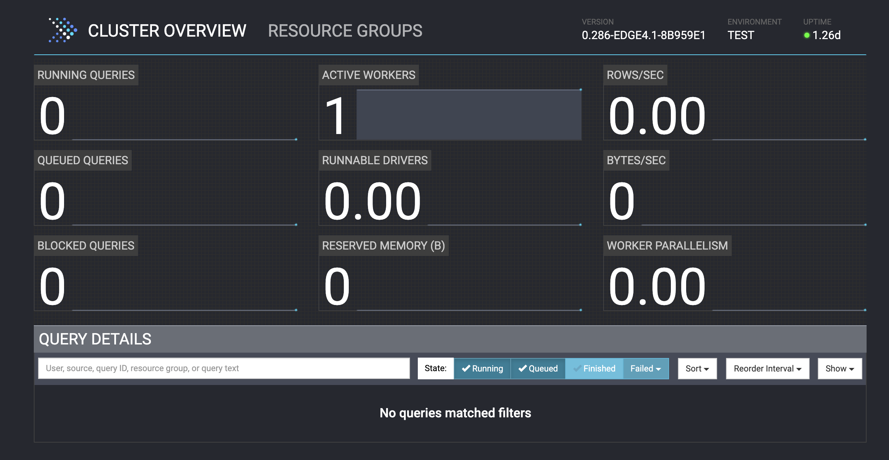

Set up an Open Lakehouse¶
In this section, you will use docker compose to create an open lakehouse with the following components:
- A MinIO s3 Object Storage as the data storage component
- A REST server to keep track of table metadata
- A single-node Presto cluster as the SQL query engine
This section is comprised of the following steps:
- Set up an Open Lakehouse
- 1. Spin up all containers
- 2. Check that services have started
- 3. Connect to Iceberg
1. Spin up all containers¶
Bring up the necessary containers with the following command:
docker compose up -d
This command may take quite awhile to run, as docker has to pull an image for each container and start them. While we wait for startup to complete, let's cover some important background architecture for our lakehouse and see how it relates to the docker-compose.yml file. This file defines everything about our multi-container application.
Lakehouse architecture¶
Recall that, at minimum, a lakehouse consists of a processing engine, data stored in a lake format such as s3-compatible storage, and a table format to organize stored data into tables. The first two pieces are somewhat straigtforward for this workshop: we spin up a Presto container for processing and a MinIO container for storage. The table format we will use is Iceberg - but where does Iceberg fit into the picture? We don't spin up an Iceberg container because Iceberg isn't an executable, it's simply a specification of how a table is organized. How, then, do we hook Iceberg into our lakehouse? This is where Iceberg catalogs come into play.
Iceberg catalogs¶
In order to use Iceberg with Presto, we have to set up an Iceberg catalog. Recall that Iceberg is a table format rather than a catalog itself. The Iceberg table format manages most of its metadata in metadata files in the underlying storage (in this case MinIO s3 object storage) alongside the raw data files. A small amount of metadata, however, still requires the use of a meta-datastore, which is what is referred to as an "Iceberg catalog". The Iceberg catalog is a central place to find the current names and locations of the current metadata pointer for each fully-qualified table in a particular data store. It is also responsible for making the "atomic swap" between different versions of metadata. Iceberg supports several different meta-datastore implementations, most of which Presto also supports. When using Presto, this storage can be provided by Hive, Nessie, Glue, Hadoop, or via a REST server implementation. We are using a REST server implementation in this workshop.
Lookig at the Docker Compose file¶
First, we define a network: presto_network. Each of our containers will communicate across this network.
The next section is the service section, which is the bulk of the file. The first service we define is that of the Presto cluster, which we have named presto-coordinator. We provide a human-readable container_name (also "presto-coordinator") and the Docker image that we want this service to be based on, which is the presto image with tag latest hosted in the prestodb DockerHub repository. The value 8080:8080 means that we want to map port 8080 on the Docker host (left side of the colon) to port 8080 in the container (right of the colon).
We also need to supply the Presto container with some necessary configuration files, which we define using the volume key. Similar to how we defined the port, we're saying here that we want to map the files that are in the presto/etc directory (relative to our current working directory on the command line) to the location is the container corresponding to /opt/presto-server/etc, which is the directory that Presto expects to find configuration files. Here are the configuration settings for the Presto server as given in ./presto/etc/config.properties that we will pass to our server container:
coordinator=true
node-scheduler.include-coordinator=true
http-server.http.port=8080
discovery-server.enabled=true
discovery.uri=http://localhost:8080
node.environment=test
coordinator: defines whether this Presto server acts as a coordinator or not. Use valuetruefor a coordinatornode-scheduler.include-coordinator: defines whether the Presto server acts as a worker as well as a coordinator. We use the valuetrueto accept worker tasks since we only have one node in our Presto clusterhttp-server.http.port: defines the port number for the HTTP serverdiscovery-server.enabled: defines whether the Presto server should act as a discovery server to register workersdiscovery.uri: defines the discovery server's URI, which is itself in this casenode.environment: defines the name of the environment; all Presto nodes in a cluster must have the same environment name
Next we specify any necesssary environment variables. In this case, we give the username and password required to access our MinIO storage. Finally, we state that this container is part of the previouly-created presto_network, meaning it will be able to communicate with other services on the network.
Now let's look at the iceberg-rest service more closely. This service uses an open source image originally created by Tabular that implements a simple REST server that adheres to the Iceberg REST specification. The code that makes up this image is a simple REST wrapper around an underlying JDBC Iceberg catalog, making it a "proxy" REST server implementation. Note that we set several environment variables inn the Docker compose file for this Iceberg REST service. Those beginning with CATALOG_ are the catalog configuration variables used to create the Iceberg catalog when the image starts up. We are specifying here that we want to use s3 storage and that the catalog warehouse will reside at the endpoint jdbc:postgresql://postgres:5432/metastore_db. In this case, postgres in the endpoint refers to the postgres container hostname defined a few lines down in the YAML file. metastore_db is the name of the PostgreSQL database we want to use for storage, and is created when the postgres service starts. The last property that we will call out is depends_on, which defines dependencies between our service containers. In this case, the postgres container will be started before the iceberg-rest container. This makes sense since the PostgreSQL database needs to be running before the REST metastore service can start.
You should now have the context you need in order to understand the configuration for the remaining services: postgres and minio. These services don't require as much setup as the others. On the last few lines of the file, we define additional volumes. These are different from those that we created on the fly in the services section in that here we create named volumes that can be persisted even if some containers need to restart.
The output of the up command will look like the below when all containers have been started:
[+] Running 9/9
✔ Network conf_presto-network Created 0.0s
✔ Volume "conf_minio-data" Created 0.0s
✔ Volume "conf_postgres-data" Created 0.0s
✔ Volume "conf_catalog-data" Created 0.0s
✔ Container presto-coordinator Started 1.0s
✔ Container postgres Started 1.0s
✔ Container minio Started 1.0s
✔ Container iceberg-rest Started 1.4s
✔ Container mc Started 1.3s
2. Check that services have started¶
Let's also check that our relevant services have started.
docker logs --tail 100 minio
If started successfully, the logs for the minio container should include something similar to the below:
API: http://172.23.0.4:9090 http://127.0.0.1:9090
WebUI: http://172.23.0.4:9091 http://127.0.0.1:9091
We will be using the console address in the next exercise. Let's check that the REST server is running with the following command:
docker logs --tail 50 iceberg-rest
If the REST service is up and running properly, you should see the below lines somewhere near the bottom of the logs, likely interspersed with other logging information.
...
2024-11-04T19:57:01.800 INFO [org.apache.iceberg.rest.RESTCatalogServer] - Creating catalog with properties: {jdbc.password=password, s3.endpoint=http://minio:9090, jdbc.user=user, io-impl=org.apache.iceberg.aws.s3.S3FileIO, catalog-impl=org.apache.iceberg.jdbc.JdbcCatalog, jdbc.schema-version=V1, warehouse=s3://warehouse/, uri=jdbc:postgresql://postgres:5432/metastore_db}
...
2024-11-04T19:57:02.213 INFO [org.eclipse.jetty.server.AbstractConnector] - Started ServerConnector@1151e434{HTTP/1.1, (http/1.1)}{0.0.0.0:8181}
2024-11-04T19:57:02.214 INFO [org.eclipse.jetty.server.Server] - Started @539ms
...
If the REST server is up, the PostgreSQL database also must be up because the metastore requires this on startup.
Now, let's check the coordinator node:
docker logs --tail 100 presto-coordinator
If the Presto server is up and running properly, the last lines of the output would like the following:
2023-11-14T04:03:22.246Z INFO main com.facebook.presto.storage.TempStorageManager -- Loading temp storage local --
2023-11-14T04:03:22.251Z INFO main com.facebook.presto.storage.TempStorageManager -- Loaded temp storage local --
2023-11-14T04:03:22.256Z INFO main com.facebook.presto.server.PrestoServer ======== SERVER STARTED ========
The Presto server will likely take the longest to start up. If you don't see any errors or the SERVER STARTED notice, wait a few minutes and check the logs again.
You can also assess the status of your cluster using the Presto UI at the relevant IP address: http://<your_ip>:8080. If you're running everything on your local machine, the address will be http://localhost:8080. You should see 1 active worker (which is the coordinator node, in our case) and a green "ready" status in the top right corner, as seen below.

3. Connect to Iceberg¶
Our containers are up and running, but you may be wondering how Presto works with Iceberg, as we didn't see any special key-value pairs for this in the docker compose file. Presto makes it very easy to get started with Iceberg, with no need to install any additional packages. If we started the Presto CLI right now, we would be able to create tables in Iceberg format - but how? Recall the volume that we passed to the presto-coordinator container. This volume includes a directory called catalog that was mapped to the /opt/presto-server/etc/catalog location in the container along with the other server configuration files. The catalog directory is where the Presto server looks to see what underlying data sources should be made available to Presto and how to connect to those sources. Let's take a look at the iceberg.properties file that was mapped to the Presto cluster.
connector.name=iceberg
iceberg.catalog.type=rest
iceberg.rest.uri=http://iceberg-rest:8181
iceberg.catalog.warehouse=s3://warehouse/
hive.s3.path-style-access=true
hive.s3.endpoint=http://minio:9090
hive.s3.aws-access-key=minio
hive.s3.aws-secret-key=minio123
This file includes a required connector.name property that indicates we're defining properties for an Iceberg connector. It also lists rest as the Iceberg catalog type, as we're using the REST catalog to support our Iceberg tables, and supplies the URI for the REST endpoint. The catalog warehouse is defined with the same value we supplied to the REST server when it started up. The remaining configuration options give the details needed in order to access our underlying s3 data source. When Presto starts, it accesses these configuration files in order to determine which connections it can make.
Leveraging high-performance huge-data analytics is as easy as that! Let's move to the next exercise to set up our data source and start creating some Iceberg tables.